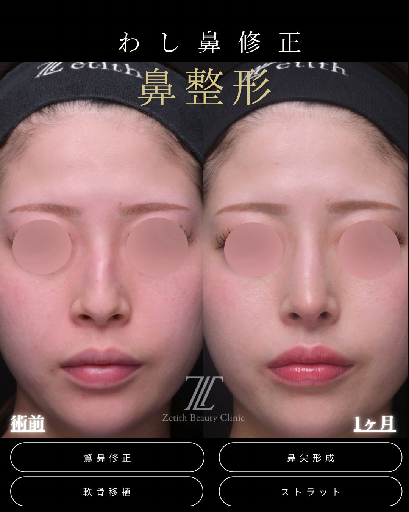
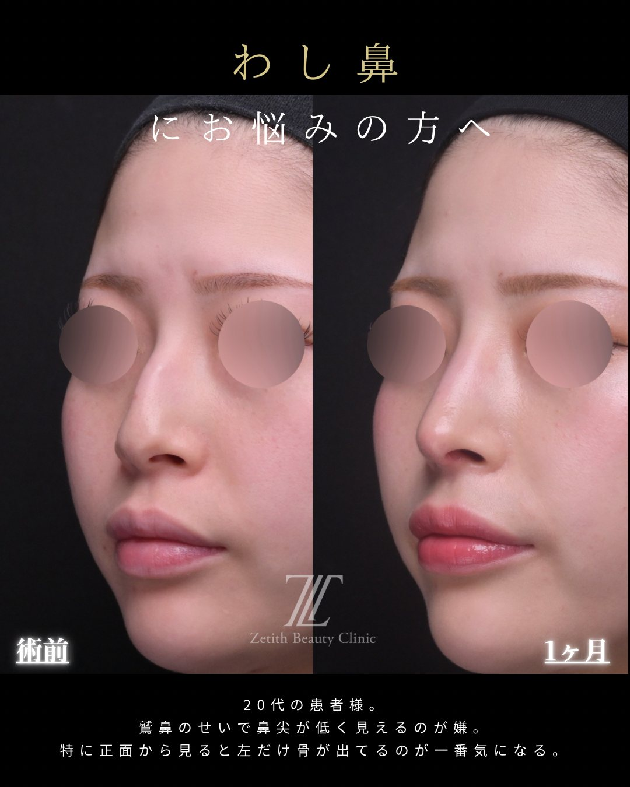
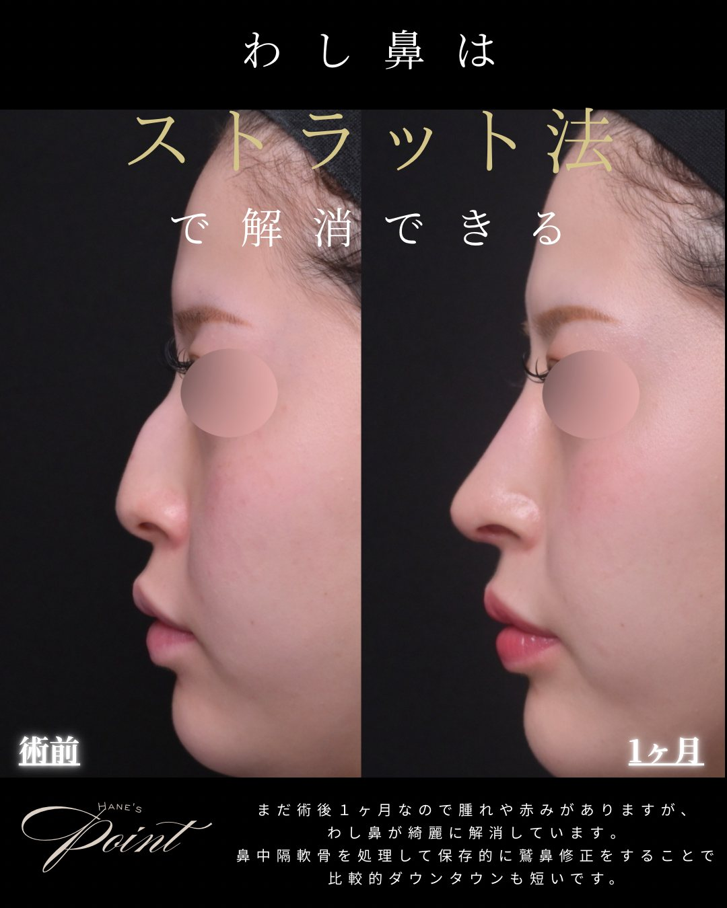

Section 01
わし鼻（鷲鼻）とは？
わし鼻（鷲鼻）とは、横から見たときに鼻筋の中央が山なりに出っぱっている状態です。鼻筋の骨や軟骨が盛り上がっていることが原因で、次のような見え方につながります。
わし鼻の気になり方
- 横顔：鼻筋の途中にコブ（ふくらみ）があり、まっすぐに見えない
- 鼻先：鼻筋が高く出ているぶん、相対的に鼻先が低く・下がって見える
- 正面：光の当たり方で、盛り上がった骨が目立って見えることがある
わし鼻は横顔の印象を大きく左右します。ただ「コブを削れば終わり」ではなく、鼻先とのバランスまで含めて設計することが、自然な仕上がりのポイントです。
Section 02
当院の治し方（ストラット法・保存的な鷲鼻修正）
鼻筋のコブ（骨・軟骨）を整えるだけだと、鼻先が下がって見えたり、鼻筋と鼻先のバランスが崩れることがあります。そこで当院は、ストラットで鼻先の土台を作りながら、鷲鼻をまっすぐに整えます。
当院が大切にしていること
- 鼻先の土台を作る：ストラット（支柱）で鼻先を支え、鼻筋を整えても鼻先が負けないように設計
- 保存的に整える：鼻中隔軟骨を処理して、削りすぎずに鷲鼻を整えるため、負担が少なくダウンタイムも比較的短め
- 鼻先とのバランス：横顔だけでなく、正面・斜めも見ながら鼻筋と鼻先の調和を設計
鼻先を整える鼻尖形成・軟骨移植・ストラットについては術式まるわかりガイド、傷を表に出しにくいクローズド法については総合ガイドもご覧ください。
Section 03
症例（正面・斜め・横）
わし鼻をストラット法で整えた症例です。横顔だけでなく正面・斜めも公開しています。タブで角度を切り替えられます。
症例｜わし鼻（鷲鼻）で鼻先が低く見えるのが悩み／鷲鼻修正＋鼻尖形成＋軟骨移植＋ストラット

images/case-washi-front.jpg

images/case-washi-oblique.jpg

images/case-washi-side.jpg
- 施術内容
- クローズド法：鷲鼻修正＋鼻尖形成＋軟骨移植＋ストラット（鼻中隔軟骨を処理して保存的に修正）
- 料 金
- ¥730,000
- 主なリスク・副作用
- 腫れ・内出血・左右差・鼻筋の凹凸・後戻り・感染・仕上がりの個人差 等
- ダウンタイム
- 約1〜2週間（写真は術後1ヶ月）
※ 20代の患者様。「鷲鼻のせいで鼻先が低く見える／正面から骨が出て見える」のがお悩みだったケース（同意のうえ掲載／プライバシー保護のため目元を加工）。効果には個人差があり、リスク・副作用を伴います。自由診療（保険適用外）。
Section 04
費用
掲載症例（鷲鼻修正＋鼻尖形成＋軟骨移植＋ストラット）の料金です。組み合わせる術式により変動します。
| 鷲鼻修正＋鼻尖形成＋軟骨移植＋ストラット | ¥730,000 |
|---|
料金について詳しく見る（別途費用・モニター）
Section 05
ダウンタイム・リスク
腫れ・内出血は1〜2週間ほどで落ち着くことが多いです。当院は鼻中隔軟骨を処理して保存的に整えるため、比較的ダウンタイムを短く抑えられますが、経過には個人差があります。
主なリスク・副作用
- 腫れ・内出血・痛み（時間の経過とともに軽快することが多い）
- 鼻筋の凹凸・段差、左右差
- 後戻り、仕上がりのイメージとの違い
- 感染、効果の個人差
Section 06
よくある質問
わし鼻（鷲鼻）はどうやって治しますか？
鼻筋のコブ（骨・軟骨）を整えて、横から見た鼻筋をなだらかにします。当院は削りすぎず、鼻中隔軟骨を処理して保存的に整え、必要に応じてストラットで鼻先の土台も作ります。状態により方法は変わるため、診察で判断します。
コブを削ると鼻が低く・不自然になりませんか？
削るだけだと鼻先が下がって見えたり、鼻筋とのバランスが崩れることがあります。そのため当院はストラットで鼻先を支えながら整え、正面・斜め・横のバランスを見て設計します。
ダウンタイムはどのくらいですか？
腫れ・内出血は1〜2週間ほどが目安です。当院は保存的に鷲鼻を整えるため比較的短めですが、経過には個人差があります。写真の症例も術後1ヶ月時点です。
傷跡は残りますか？
当院はクローズド法（鼻の穴の中の切開）を軸にしているため、表に見える傷は残りにくいです。状態により方法は変わります。